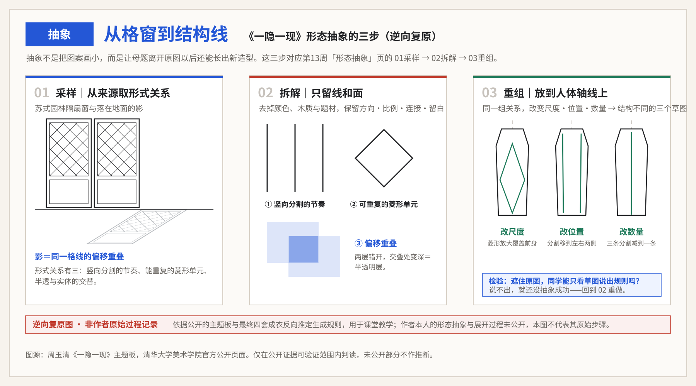

第1课时｜45分钟
女装设计 III · 第13周
第13周｜自定主题系列：独立调用方法完成第一次提案
自定主题不是自由拼贴；它必须由研究证据、明确张力、服装语言和验证方法共同构成。
不再重复方法教学，以独立研究证据建立命题、规则与首轮五款提案
一个私人兴趣如何被转化为他人能够阅读、设计能够执行、系列能够扩展的命题？
Marine Serre · 2026秋冬成衣同一系列5套｜用于首轮观察
图像：Marine Serre 2026秋冬成衣｜课堂反向分析，不代表品牌官方版型说明。
常量｜每套都有名字圣母、养鸟人、女猎人、书记、上妆者——先定人物，再定衣服。
变量｜身份靠什么说明道具（鸟、狗、笔）、场景（雕像、蓝幕）和衣服共同承担，缺一件都读不出来。
变量｜材料的社会出处旧衬衫、旧西装、旧毛皮被重新组装，材料自带来历。
这是本周要学的做法：命题先于造型。五个人物就是五条独立但同源的证据链。
十六周课程路径女装设计 III · 第13周 · 第1课时｜45分钟
十六周不是孤立主题，而是一条连续的设计证据链
前8周建立方法并完成中期验证；后8周深化春夏与秋冬系列，最终独立完成主题系列与答辩。
01–04判断与定位
05–08提取与验证
09–12季节系列开发
13–16独立项目与考核
已完成本周后续
第1课时｜45分钟
女装设计 III · 第13周
03 学习目标
自定主题第一步：把概念翻译成看得见的色彩、材质与结构关系
这周不做款式，做翻译：主题从哪来、用什么颜色和材质承担、母题怎样变成结构线。
第1课时节奏衔接与选题6′大纲与教材证据5′来源·色彩·抽象9′词汇·模型与案例3′实操22′
关键判断
研究证据的筛选；概念张力的建立；主题向可执行系列规则的转译。
主要难点
避免把个人偏好、情绪词或图像气氛误当作设计命题，并让每条规则都能生成多款而非单一造型。
当周成果
完成一份提案：证据来源、核心命题、色彩与材质计划、形态抽象页、系列常量与可控变量，直到首轮五款结构草图。
提交要求
提交研究证据图谱1页、命题卡1页、色彩与材质计划1页（三个色位＋面积比＋实物小样）、形态抽象页1张（母题3＋拆解3＋重组3）、五款雏形线稿1页。
体例对照本页的“关键判断”即教学重点，“主要难点”即教学难点，“提交要求”即本周提交规格，“当周成果”是它的产出清单。 学情大二，已完成第01—12周，手上有成立的五套秋冬编排、删除日志与三个候选命题。
第1课时｜45分钟
女装设计 III · 第13周
第12周→本周
今天不从零开始——你带来的三个候选命题，今天要选定其中一个
第12周是最后一次由课程给定方向；从本周起题目由你自己出。今天要做的第一件事是选，不是想。
第12周带来的
本周变成
在哪一页用
三个候选命题
今天选定一个——其余两个写进备选，不删
命题诊所（第1课时实操）
成立的五套（秋冬最终编排）
证明“方法能用”的凭据；新命题的规则要能生成同等规模的五款
系列应用
删除日志（至少三条删除理由）
选题时的排除标准——删除标准比保留标准更有用
比较判断
怎么选（三条，缺一条就换一个）① 能指向身体：写得出它改变谁的哪一部分，而不只是“关于某物”。 ② 能生成多款：同一条规则要能长出五款，不是一个造型。 ③ 能被证伪：写得出什么情况算它不成立——找得到反例的命题才做得下去。
开场 2 分钟摊开三个候选命题、成立的五套与删除日志 → 用上面三条各打一次勾，选出今天要做的那一个 → 其余两个写在纸角，本周不再回头。
第1课时｜45分钟
女装设计 III · 第13周
04 大纲对照
本周不是额外内容，而是大纲成果的具体证据
下面五项来自《25级〈女装设计〉课程大纲》与《考核大纲》原文，说明本周的每一项输出将落到哪里、如何计分。
课程目标 1—3
本周是唯一一次三个目标同时被调用的课：审美判断、设计能力与产品思维。
前12周分开练，这一周合起来用。
考核内容｜主题设定与元素提炼
三大考核块之一，本周的研究图谱与命题卡是它的直接证据。
主题定不下来，后面三周都会被拖住。
考核内容｜系列女装设计
占比 40%。五款雏形是期末系列的第一版骨架。
这一版定的常量，期末很难再推翻。
平时成绩｜40%
证据图谱、命题卡、四组实验与五款线稿，计入课堂表现与作业。
被否掉的命题也计分——前提是写清为什么否。
期末实践｜60%
本周确定的命题将按六项标准（10/10/20/20/20/20）接受最终评分。
换题的窗口只到下周；再往后只能在现有命题里改。
第1课时｜45分钟
女装设计 III · 第13周
05 教材证据
调研不是收集资料，是把资料压成一个方向
教材把调研画成一条有终点的流程——终点是“开始设计”，不是“资料齐了”。
图4-11 的流程：流行趋势、品牌定位、销售信息三条线先并行，再汇到“主题方向”这一个点上。三条线缺一条，方向就是猜的。
图4-12 的整合：板面把款式排成两行，每行标注“尝试”或“投资”——同一批资料被分成了两种商业决策，而不是一堆好看的图。
可迁移的做法：调研的产出是“一个方向 + 一组分类”。你的证据墙如果分不出类，说明还没调研完。
观察任务：在你的资料里找出三条来源不同的线索，看它们能不能汇到同一个方向。
来源：于芳《服装设计基础与创意实践》（中国纺织出版社，2023），第56页。图像按教学需要裁切局部，未改变原始比例。
第1课时｜45分钟
女装设计 III · 第13周
06 教材证据
主题板的下一页必须是草图，否则它没有用
材料样、拼贴和人体草图钉在同一本本子里——主题板不是终点，是草图的输入。
上：材料样直接钉在页上。颜色和手感被同时固定下来——不是“大概是暖色”，是这几块布。
中：拼贴保留来源的原始形态。建筑、器物、人像各自还认得出，没有被修饰成统一气氛。
下：草图页上的颜色和材料，能一条条对回上面两页。这才是主题板起作用的唯一证据。
观察任务：翻到你自己的草图页——每一处颜色和材料，都能指出它来自主题板的哪一块吗？
来源：Steven Faerm《The Fashion Design Course》（Quarto Publishing plc），第90页。图像按教学需要裁切局部，未改变原始比例。
第1课时｜45分钟
女装设计 III · 第13周
07 核心词汇
先建立准确理解，必要的行业术语再保留英文
术语必须能够指导一个动作或判断。
设计命题｜Design Proposition
包含研究对象、核心张力、目标身体关系与行动方向的可验证陈述。
证据簇｜Evidence Cluster
由相互支持或相互冲突的图像、文本、物件和观察记录组成的研究单元。
概念张力｜Conceptual Tension
保护/暴露、秩序/失控等能够持续产生选择与冲突的双向关系。
系列规则｜Series Rule
跨越多个品类仍可被识别的常量，以及用于扩展差异的受控变量。
形态抽象｜Formal Abstraction
去掉颜色、纹样与具体题材，只保留方向、比例、连接与留白，使母题离开原图后仍能生成新造型。
色彩比例｜Colour Ratio
主色、辅色与强调色在五款上的面积分配。强调色超过十分之一就不再是强调。
第1课时｜45分钟
女装设计 III · 第13周
08 概念模型
自定主题最容易断在这四处——每一处都有可识别的信号
证据、张力、规则、验证是一条链。断在哪一环，出来的信号不一样。
证据 × 张力
资料太整齐，压不出矛盾，就没有可推进的动力。
失败信号：所有资料都在说同一件事。
张力 × 规则
张力停在形容词，编不成可画的形状。
失败信号：规则写成“要有秩序感”。
规则 × 扩展
规则太窄，只能生成一款，撑不起系列。
失败信号：换一个品类，规则就用不上。
验证 × 证据
实验做完了，却回不到最初的问题。
失败信号：实验好看，但答不出它验证了什么。
第1课时｜45分钟
女装设计 III · 第13周
10 主题来源
自定主题不是“我喜欢什么”，而是从三条可追溯的路径里选一条
三条路径都要求给出可查的来源。凭印象命名的主题，到第14周会找不到实验对象。
路径 A｜传统艺术
山水、壁画、器物、书法。提取的是笔势、留白、层叠与表面肌理这类形式关系，不是搬运图案本身。
证据：图像出处（馆藏编号或出版物页码）＋三处形式观察句。
路径 B｜非遗工艺
苏绣、缂丝、香云纱、编结、蓝染。提取的是工艺原理——受力、穿透、堆叠、染整顺序——再换到当代品类上。
证据：工艺步骤记录＋一次材料试样。第03周的方法，这次用在你自己的主题上。
路径 C｜社会与身体命题
身体自主、劳动与休息、代际、迁徙。必须落到一个具体人群和一个具体场合，否则停在口号。
证据：一次访谈或一份可追溯公开资料＋一条身体摩擦。
三条路径的共同底线主题必须能生成规则，而不是只能生成图片。检验：把主题交给同组同学，他能不能用它画出第二款、第三款？画不出，就换路径或者补证据。
第1课时｜45分钟
女装设计 III · 第13周
张力轴
「明确张力」怎么写：一条常量轴，一到两条变量轴
命题里要求的「明确张力」不是形容词，是你从第01周十一条轴里选定的位置。常量轴负责识别，变量轴负责节奏——这就是第09周「常量维持识别、变量制造节奏」落到自定主题上的样子。
01
选一条常量轴五套始终停在同一边。这条让人一眼认出这是一个系列，不是五个想法。
02
选一到两条变量轴每套沿这条移动一格。它决定节奏，也决定「张力峰值」那一套要推到哪。
03
声明其余八条不处理写「本系列不处理」。不声明，评审会当成你没想过，而不是你选择了不做。
| 《一隐一现》这样读（逆向复原） | 轴上的位置 | 看得见的证据 |
|---|
| 常量轴 轻盈 ↔ 厚重 | 四套都停在轻盈 | 半透明薄层，四套不变——这就是识别 |
| 变量轴① 贴合 ↔ 离体 | 01 贴合 → 03 离体最大 | 体积从肩移到腰腹，成茧形 |
| 变量轴② 垂坠 ↔ 支撑 | 01 垂坠 → 04 支撑最大 | 肩部加硬支撑，撑成方形＝张力峰值 |
| 不处理 其余八条 | 不动 | 不做，不等于没想——要写出来 |
十一条轴（第01周）暴露↔覆盖 · 垂坠↔支撑 · 贴合↔离体 · 轻盈↔厚重 · 固定↔可变 · 洁净↔做旧 · 克制↔繁复 · 实用↔概念 · 复古↔未来感 · 传统↔解构 · 男性化↔女性化。从这十一条里选，不要另造词。这件作品第15—16页会再出现：先看四套成衣，再倒回去看它的抽象。
本页输出「张力轴卡」1 张 ——
打开学生用模板，随主题板与首轮五款一并提交。
上表为课堂逆向复原：依据公开的主题板与最终四套成衣反向推定，不代表作者的原始步骤。 第1课时｜45分钟
女装设计 III · 第13周
11 色彩与材质计划
色彩不是“好看的颜色”，是有面积比和承担位置的计划
这周要定下能贯穿五款的色彩与材质组合。到第15周，它直接决定效果图的整体调性。
主色｜60–70%
铺满衣身的底色。写出色名、来源物和可对应的面料。
例：茜草红取自壁画剥落层，对应粗纺毛呢。
辅色｜20–30%
承担分割、内层或第二品类。要和主色有明度或质感差，不能是近似色。
检查：把两色转成灰度还分得开吗？分不开就是同一个色。
强调色｜5–10%
只出现在领口、内层、下摆或配件。面积一旦超过十分之一，它就不再是强调。
失败信号：强调色铺到半件衣服，五款看起来一样重。
材质样本
每个色位至少一块实物小样。同一个颜色在平纹布、针织和毛皮上不是一回事。
贴在计划页边上，第15周做材质映射时直接调用。
检验把五款排开，只看色块面积比——能不能一眼看出哪一款是形象款、哪一款是引流款？看不出，说明颜色还没有承担角色。 输出色彩与材质计划 1 页（三个色位＋面积比＋实物小样）。
第1课时｜45分钟
女装设计 III · 第13周
13 高校学生案例①
院校实例｜《碎瓷织序》：非遗工艺怎样变成可以继续生成的规则
林芝伊从潮汕嵌瓷里提取的不是瓷片纹样，是支撑—连接—排布三个关系。这就是上一页“形态抽象”四步走完之后的样子。
 结构与表面局部
结构与表面局部 材料连接细节
材料连接细节 成衣验证 01（点击放大）
成衣验证 01（点击放大） 成衣验证 02（点击放大）
成衣验证 02（点击放大）01
解构原工艺｜对应“采样”
骨架支撑／灰泥黏合／碎瓷有序排布——先把工艺拆成三个受力关系。
02
写成抽象规则｜对应“拆解”
网格承重＋穿孔连接＋硬片按密度排列。到这一步已经看不出瓷片了。
03
转译材料与结构｜对应“重组”
网格面料、手工编织、瓷片拼接与UV覆膜皮革——同一条规则换了四种材料。
04
验证视觉秩序｜对应“检验”
蓝、粉、白并置，硬片和柔性织物形成层次与张力。这就是你的色彩与材质计划要写的东西。
复制直接印嵌瓷图案，或者随机粘贴瓷片。
提取支撑—连接—排布成为可以继续变化的系统。
第1课时｜45分钟
女装设计 III · 第13周
14 高校学生案例②
同一条规则走到效果图和成衣：四套之间到底哪里不一样
第12页定的是色彩和材质。这一页只看一件事——四套的结构差在哪，而不是花色差在哪。
 四套系列效果图（点击放大）
四套系列效果图（点击放大）常量：灰白色域与纵向延伸四套共用同一个色域和同一条修长比例。这就是那一页色彩计划在系列层面的样子。
变量：表面密度与体积位置半透明叠层的疏密在换，局部斑驳的位置在换。换掉的是结构和密度，不是印花图案。
成衣把它验证掉三个视角说明虚实差异在真实光线下仍然读得出来。效果图好看不算数，落到身上还成立才算。
轮到你把你重组出的三个草图并排，问同一个问题：它们之间差的是结构还是只有花色和长度？只差花色的，回到“形态抽象”第03步重做。 图源：周玉清《一隐一现》效果图与成衣走秀影像，清华大学美术学院官方公开页面｜仅在公开证据可验证范围内判读，未公开部分不作推断。
第1课时｜45分钟
女装设计 III · 第13周
纵向案例｜第2格
那张影子照片，怎么变成能生成造型的结构线
上一页你看了它的四套成衣——差的是结构，不是花色。现在倒回去：那张影子照片，究竟怎么变成了这四套的结构线。
01 第13周调研主题板
02 第13周抽象结构线
03 第14周展开受控变形
04 第15周表现效果图
05 第16周系列Line-up
 作者公开的主题板
作者公开的主题板
倒推的三步（逆向复原）左边是真的隔扇窗、菱形格、地上的影——作者自己放出来的主题板。
右边是复原的拆出三个形式关系：竖向分割的节奏、可重复的菱形单元、偏移重叠。这是课堂倒推，不是作者的原始步骤。
为什么倒推得出来因为最终四套里这三条关系还在。抽象成功的标志就是——结果里还找得到来源的关系。
轮到你把你的主题板放左边，右边先空着。这周结束时右边要有你自己的三个形式关系。说不出三个，说明你采样的图还不够。 图源：周玉清《一隐一现》公开资料，清华大学美术学院官方公开页面｜仅在公开证据可验证范围内判读，未公开部分不作推断。结构线图与分岔图为逆向复原：依据公开的主题板与最终四套成衣反向推定生成规则，用于课堂教学，不代表作者的原始步骤。
第1课时｜45分钟
女装设计 III · 第13周
09 比较判断
三组最常见的替代品——看起来像，做起来完全不是一回事
左边那一项做起来快得多，所以大多数人停在左边。右边才是本周要交的东西。
主题词 ≠ 设计命题
主题词只命名领域；设计命题说明证据、矛盾、身体关系与设计行动。
检验：把它读给同学听，对方能不能立刻说出你要做什么？说不出，就还是主题词。
情绪拼贴 ≠ 研究图谱
拼贴追求气氛相似；研究图谱显示来源、类别、关系、空缺与可转移规则。
检验：随手指板上一张图，你能不能说出它的来源、类别和它跟旁边那张的关系？
造型模仿 ≠ 规则转译
模仿复制可见结果；转译保留生成逻辑并在新的身体、材料和品类中重写。
检验：把参考对象的材料和品类都换掉，你的规则还生成得出东西吗？
第1课时｜45分钟
女装设计 III · 第13周
10 设计师案例
上衣版型五套不变，只换材料——这样够不够构成系列
先找出哪一件是五套都在重复的，再判断重复到什么程度就变成了偷懒。
Shuting Qiu · 2026秋冬上海同一系列 5套｜看重复与差异
图像：Shuting Qiu 2026秋冬（上海时装周）｜课堂反向分析，不代表品牌官方版型说明。
常量｜短上衣＋下装五套都是两件式，上衣长度全部停在腰节，一次都没有改过。
变量｜装饰放在下装珠饰（01）→ 刺绣（02）→ 印花打底（03）→ 短裤（04）→ 满片亮片（05），密度逐套上升。
变量｜上衣材料粗花呢 → 光面 → 牛仔 → 毛皮 → 皮革，材料在换，版型不换。
角色｜梯度05 形象款（满亮片）；01·02 引流款（上衣可单穿）；03·04 过渡款。
课堂回答：上衣版型不变、只换材料——这算“一条规则用了五次”，还是“一款卖了五次”？分界线在哪里？
第1课时｜45分钟
女装设计 III · 第13周
11 设计师案例
议题落在选角上，还是落在衣服上
这一组的证据同时在两个地方——谁在穿，以及衣服用什么做的。
Collina Strada · 2026秋冬成衣同一系列 5套｜看议题落点
图像：Collina Strada 2026秋冬成衣｜课堂反向分析，不代表品牌官方版型说明。
常量｜非标准身体五位模特的年龄、体型与行动方式各不相同，选角本身就是证据的一部分。
变量｜材料出处旧格纹料 → 西装料 → 印花羽绒 → 光面缎 → 动物纹，多数是既有面料的再使用。
变量｜可及性03 是坐姿造型：开合位置和长度都为坐着设计，用的却是和 01 同一套规则。
角色｜梯度01 形象款；03 过渡款（同一规则换一种身体）；02·04 引流款；05 搭配款。
课堂回答：如果把模特全部换成标准身材，这五套还剩下什么？剩下的部分，才是衣服自己承担的议题。
第1课时｜45分钟
女装设计 III · 第13周
12 第1课时检查
28分钟：把概念判断转成第一版可见输出
每个阶段结束都要留下图像、标注或修改记录。
17-23分钟
证据墙阅读两人一组用无标签观察句标注15项资料，删除仅提供气氛的图像。
23-31分钟
聚类与空缺建立4个证据簇，并指出每簇尚缺的身体、材料或语境证据。
31-39分钟
命题诊所把‘关于某物’改写成含对象、张力、穿着者和设计行动的一句话。
39-45分钟
规则编码完成轮廓、结构、材料、色彩、细节五条规则及禁用项。
交接第2课时：带着聚类后的证据与命题卡进入二维播种与三维试探。说不出证据来源的命题，不进入播种。
第2课时｜45分钟
女装设计 III · 第13周
第2课时｜45分钟
从判断进入制作、编辑与反馈
第1课时建立了命题与规则；第2课时用二维播种和三维试探，接受第一次批评。
方法与实验9′ → 实操28′ → 讲评与评价5′ → 预告与收尾3′
第2课时｜45分钟
女装设计 III · 第13周
14 操作动词
用八个动作推进设计，不用空泛形容词
每个动作都必须产生可比较的前后版本。
01
证据采样每类资料只保留能回答具体问题的3项，并标注来源、日期与观察句。
02
去标签描述禁用风格形容词，只写形态、动作、材料和空间关系。
03
关系聚类按重复、对立、因果和缺失四种关系重排证据。
04
张力压缩把资料压缩为一组可同时成立的矛盾词，并说明身体层面的冲突。
05
命题改写用‘为谁/在何处/面对何种张力/通过何种行动’完成一句话命题。
06
语言编码为轮廓、结构、材料、色彩、细节各写一条可画、可做、可判断的规则。
07
反证测试加入一张不符合预期的证据，检查命题是否过于宽泛或只会自我证明。
08
五款播种用同一常量和不同变量生成5个低精度结构雏形，先检查差异跨度。
第2课时｜45分钟
女装设计 III · 第13周
15 变量矩阵
先控制变量，再判断哪一种变化真正有效
矩阵用来生成与比较，不要求把所有组合都做成最终款。
| 变量 | A | B | C | D |
|---|
| 身体关系 | 包裹 | 悬离 | 压缩 | 暴露 |
| 轮廓 | 垂直窄长 | 横向扩张 | 局部膨胀 | 断裂分段 |
| 结构策略 | 连续裁片 | 模块拼接 | 外置支撑 | 可拆连接 |
| 材料行为 | 垂坠 | 挺立 | 透明叠层 | 回收重组 |
| 系列角色 | 开场声明 | 核心论证 | 商业连接 | 实验峰值 |
怎么用：先在“身体关系”一行选定 1 项作为常量，五款全部不许改它；其余四行才是可动的。
覆盖要求：五款至少要跨到“轮廓”行的三个不同选项，否则差异不够，读起来像一款。
无效组合：“暴露 × 外置支撑”“压缩 × 可拆连接”——身体关系与结构策略互相抵消就不成立。
第2课时｜45分钟
女装设计 III · 第13周
16 受控实验
一次只改变一个主变量，保留可追踪依据
基准型与V1-V3必须使用相同视角、比例和标注方式。
基准型｜证据原型
选择一个证据簇，固定身体部位、材料尺寸与连接点，建立未经造型化的基础状态。
记录格式：四视角照片 + 一张标注图，写明固定了哪个部位、哪个尺寸、哪些连接点。
V1｜尺度变量
其余不变，只把核心模块放大或缩小，记录重心、活动量与概念强度。
记录格式：原型与放大／缩小版同框拍摄，标注倍率，写下重心移动了多少。
V2｜位置变量
其余不变，只移动模块与身体的接触位置，比较轮廓和观看路径。
记录格式：同一模块在三个接触位置的正侧背对比图，标出观看路径的变化。
V3｜材料变量
其余不变，只替换挺度或透明度，判断命题是否依赖某种物性。
记录格式：两种材料同版型并列，写一句：命题是否只在其中一种材料上成立。
第2课时｜45分钟
女装设计 III · 第13周
17 系列应用
首轮五款不是五个想法，是同一条规则的五次检验
这一轮不追求完成度——只要求五款之间的差异，是你有意造出来的。
造型 01｜命题声明
用最清楚的身体关系和轮廓常量，建立整组的阅读入口。
造型 02｜规则验证
只改一个结构变量，证明这条规则不是只适合第一款。
造型 03｜品类转译
把同一规则转到另一个品类上，检查功能和识别度还剩多少。
造型 04｜张力峰值
把冲突变量放大到极限，这一款用来暴露规则的边界在哪。
造型 05｜反证对照
故意做一款不符合规则的，用来确认规则真的在起作用。
检查：把 05 混进前四款里给同学看。如果他挑不出来，说明你的规则还没有真正生效。
第2课时｜45分钟
女装设计 III · 第13周
19 第2课时实操
28分钟：完成实验、编辑、同伴反馈与锁定
最后5分钟必须写下下一步动作，不能只停留在讨论。
14-20分钟
二维播种10分钟生成12个极简轮廓，只保留规则和身体关系。
20-28分钟
三维试探用纸、坯布或回收材料完成1:2局部体积实验并拍摄四个视角。
28-36分钟
第一次提案用3分钟说明证据链、命题、常量、变量和一个失败试验。
36-42分钟
批评记录同伴只用‘可见证据/推断/风险/下一步’四栏反馈，设计者写下三项决定。
交接第14周：命题卡、系列常量与五款雏形，是受控变形的起点。没有写清常量的提案，无法做受控实验。
第2课时｜45分钟
女装设计 III · 第13周
20 提交证据
提交板面必须让评审者快速找到四类证据
这是第一次提案，评审看的是推导过程而不是完成度。四类证据缺一不可。
研究证据图谱
1页，至少12项可追踪来源、4个关系簇、2个反证和3条观察结论。
不合格：来源写不出（没有出处、日期、观察句），或 12 项资料全部指向同一个结论。
命题与规则卡
1页，含一句话命题、5条系列规则、3个禁用项与目标穿着情境。
不合格：命题里出现“美”“有趣”“独特”这类词；或规则画不出来。
2D/3D实验组
4组，每组标明不变项、单一变量、结果、风险和下一步。
不合格：四组同时改了多个变量，无法判断是哪一个起的作用。
五款第一次提案
1页低精度线稿，显示系列常量、品类差异与核心款位置。
不合格：五款看不出共同语言，或看不出差异——两头都不行。
第2课时｜45分钟
女装设计 III · 第13周
21 同伴讲评
反馈只使用“证据—判断—动作”
禁止只说好看、不好看、再丰富一点。
证据
你的判断在图、样片或系列编排的哪里？
本周指向：指出是证据图谱上的哪一项，不能只说“感觉跟主题有关”。
因果
这个形式为何回应主题、身体或市场条件？
本周指向：说明这条规则是从哪个矛盾推出来的，中间那一步不能跳。
取舍
应该保留、删除、替换还是补位？
本周指向：这条规则如果删掉，五款里有几款会塌？塌不了，说明它不是常量。
行动
下一版具体改变哪个变量，如何验证？
本周指向：指定下一轮要做的单变量实验，并说明拿什么判断成败。
第2课时｜45分钟
女装设计 III · 第13周
22 形成性评价
第13周检查：本周成果是否允许进入下一阶段
标记为“成立 / 部分成立 / 需重做”，并写下证据位置。
研究证据质量 · 25%
来源可追踪，观察具体，能支持或挑战命题。
命题与张力 · 20%
命题明确、非陈词滥调，并能持续推动形式选择。
规则可执行性 · 20%
轮廓、结构、材料等规则可画、可做、可判断。
实验与反思 · 20%
单变量实验具有比较价值，能记录失败并修订。
系列扩展潜力 · 15%
五款既有共同语言，又具备品类和强度差异。
第2课时｜45分钟
女装设计 III · 第13周
23 下周准备
第14周把提案交给实验：受控变形与五款扩展
下周不再讨论命题对不对，只做单变量实验。没写清常量的提案，做不了受控实验。
带上｜命题卡
一句话命题 + 5条规则 + 3个禁用项，打印或手写都可以。
下周所有实验都从这张卡出发。
带上｜五款雏形
低精度线稿即可，但常量必须在五款上都指得出来。
指不出常量，下周无法确定“不变的是什么”。
带上｜一次失败
本周被否掉的那一版，连同你判断它失败的理由。
失败版本是下周实验的对照组。
准备｜材料与工具
纸、坯布或回收材料，够做四组 1:2 局部实验的量。
材料不够，下周就只能画图。
第2课时｜45分钟
女装设计 III · 第13周
一句话小结：把本周判断写成下一步动作
“我保留 ______，因为证据是 ______；我删除或修改 ______，下一周将用 ______ 验证。”
01自定主题的自由来自证据充分后的选择，而不是没有限制。
02可持续发展的概念必须包含张力；只有情绪词通常无法生成系列。
03系列规则要同时说明不变什么、改变什么以及如何判断结果。
04第一次提案的目标不是证明自己正确，而是暴露下一轮最值得验证的问题。
课后查阅｜教学补充
女装设计 III · 第13周
期末评价连接
本周成果将进入同一套六项终期评价
平时训练不是零散作业，而是期末系列的证据积累。
10分
时代性与创意
主题回应当下，并形成自己的问题与立场。
10分
趋势性与元素
提炼的设计元素与当季趋势、审美和来源一致。
20分
当代女性适配
款式回应身体、动作、场景与真实穿着需求。
20分
整体造型美感
比例、色彩、材料与细节共同形成完整造型。
20分
市场与定位
顾客、价格、品类和使用情境边界清楚。
20分
统一与丰富
风格统一，同时具有角色、搭配与造型变化。